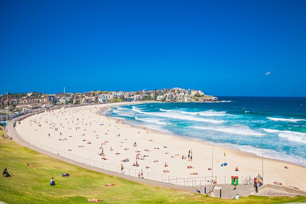
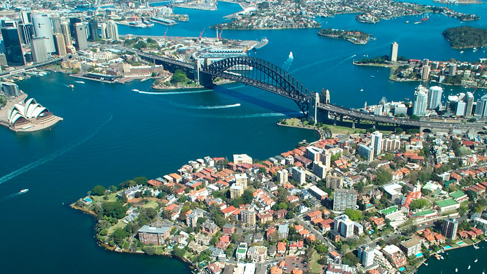

SIDNEY
Sídney, capital de Nueva Gales del Sur y una de las ciudades más grandes de Australia, es famosa por su Casa de la Ópera de Sídney junto al puerto, con un característico diseño con forma de velas. El enorme Puerto Darling y el puerto Circular Quay más pequeño son núcleos de la vida ribereña, con el arqueado puente de la bahía de Sídney y el reconocido Real Jardín Botánico que se encuentra cerca. La plataforma exterior de la Sydney Tower, el Skywalk, ofrece vistas en 360 grados de la ciudad y los suburbios.

Dominique: El Acuario de Sídney, el Zoológico Taronga y el Zoológico Wild Life Sydney albergan animales, como koalas, canguros, tiburones y serpientes. El mercado de pescado de Sídney en Pyrmont tiene una subasta activa de productos marinos y restaurantes que sirven las capturas del día. Hay opciones culinarias multiculturales en toda la ciudad, incluido el barrio chino de Haymarket y los restaurantes que atienden a la comunidad italiana de Leichhardt. Un paseo en transbordador por la bahía es parte de la experiencia de visitar destinos fuera de Sídney, como las playas Bondi y Manly, ambas populares para el surf.
La Ópera de Sídney o Casa de la Ópera de Sídney, situada en la ciudad de Sídney, estado de Nueva Gales del Sur, Australia, es uno de los edificios más famosos y distintivos del siglo XX.

El puente de la Bahía de Sídney, que atraviesa la bahía de Sídney, conecta el centro financiero de la ciudad con la costa norte, una zona de carácter residencial y comercial. Tras más de ocho años de construcción se abrió al público el 19 de marzo de 1932.
La curva de arena blanca de Bondi es una de playas más icónicas de Australia. Las olas continuas atraen a los surfistas, mientras que, en un sitio cercano, los residentes más audaces nadan en la piscina oceánica de icebergs durante todo el año. Los modernos habitantes de Sídney que cuidan de su salud suelen visitar las cafeterías relajadas que rodean Hall Street, mientras que los mochileros frecuentan los pubs informales de la zona. Los peatones y corredores recorren el acantilado Bondi to Coogee Coastal Walk, que brinda paisajes espectaculares.
Darling Harbour es una localidad de Sídney, Nueva Gales del Sur, Australia. Se trata de una gran calle peatonal de recreo y que está situado en las afueras del oeste del distrito central de negocios de Sídney.
La bahía de Sídney, también llamada Port Jackson, es un puerto natural en torno al cual se sitúa la mayor aglomeración urbana de Australia, Sídney.
